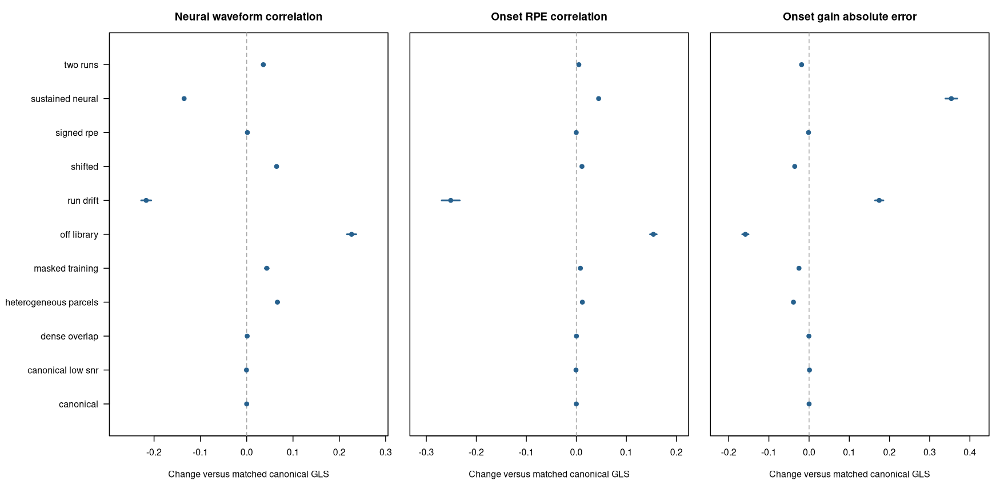

Noise-aware HRF fitting and recovery diagnostics
Source:NOISE_AWARE_HRF_RECOVERY.md
This change implements pooled AR(1) noise estimation, stronger evidence for cross-run HRF selection, and event-schedule diagnostics for amplitude attenuation and leakage. The continuous neural inverse and fixed-lambda convention remain; this does not introduce event-constrained neural estimation or automatic amplitude correction. The existing NIfTI/file wrapper is unchanged.
User-visible behavior
estimate_crossrun_hrf() now defaults to noise_model = "ar1" and evidence = "calibrated". It also applies a small fixed shape-distance penalty (canonical_strength = 0.01) toward fallback_kernel. With hrf_library(), that first candidate is canonical; custom libraries must designate their own fallback. Learning remains optional and a fixed canonical HRF remains the baseline.
A learned departure must have task evidence, evidence against the prespecified shape, and compatibility with every usable training run. Otherwise the voxel uses a supported, non-rejected parcel anchor or the prespecified shape. Parcel anchors need at least min_parcel_voxels individually supported voxels for their shape. Borrowing an anchor does not turn a voxel’s own evidence into support. min_r2 remains an additional minimum effect-size gate, not a p-value.
Inspect these fields:
-
fit$noise: run/voxel noise group, coefficient, contributing voxel count, and status, including boundary estimates or unidentifiable covariance. -
fit$selections: selected task/shape p-values, compatible/supported shape counts, evidence, selection/fallback reason, and training-run stability. -
fit$designs: whitened design ranks, usable observation counts, and rho strata. -
fit$training_runs: explicit target exclusions. Withreturn_scores = TRUE,run_evidenceretains the per-run native tests for detailed review.
With AR/calibrated fits, deconvolve_crossrun_hrf() now uses the fitted acquisition mask by default, including during input scaling. Nonfinite censored observations are allowed; nonfinite observations on retained rows exclude that voxel run. Latent activity is estimated on the full original time grid. Its observation_mask attribute identifies observed acquisitions: modeled values in gaps must not be mistaken for measured data during subsequent alignment. Unidentifiable AR covariance produces explicit missing activity rather than silently assuming white noise.
Inverse nuisance handling stays explicit: nuisance_mode = "ignore" preserves the existing assumption of consistently prepared BOLD inputs. Optional "joint" fits unpenalized intercept, trend, and supplied nuisance coefficients in the inverse. Training always jointly fits its own nuisance coefficients. The pilot found that a free inverse nuisance trend can amplify low-frequency uncertainty in this very flexible latent model, so joint inverse fitting is not enabled by default. Do not independently project only the BOLD and assume this equals a joint task/nuisance model.
To reproduce the original interface’s estimation and application choices:
legacy_fit <- estimate_crossrun_hrf(
bold, events, tr = TR, kernel_grid = candidates,
noise_model = "ols", evidence = "legacy"
)
legacy_result <- deconvolve_crossrun_hrf(
bold, legacy_fit, lambda = 0.01,
nuisance_mode = "ignore", observation_mask = "all"
)The old example, benchmark, and validation scripts explicitly select this legacy mode so their published comparisons remain reproducible. Their numerical settings are not silently replaced by new defaults.
Noise model and computational implementation
For each run, noise estimation uses a fixed event-amplitude mean model based on the prespecified HRF. When residual degrees of freedom allow, its first two finite-difference temporal derivatives provide modest protection against HRF mismatch. Free event amplitudes keep trial variation out of a condition-mean residual model. At least 10 residual degrees of freedom are required; the richer derivative model requires 20. Failure is recorded rather than interpreted as white noise.
Native code evaluates a small AR coefficient grid using restricted likelihood. It normalizes columns and factors the fixed mean-model subspace once per grid point, then applies its projections to voxel blocks with BLAS. Likelihood profiles are averaged within supplied parcels, or the run if no parcels are provided. This pools covariance information without averaging away signed BOLD responses. It is a composite estimation criterion; spatially correlated voxels are not counted as independent observations for an evidence test.
noise_rho can instead supply a fixed scalar or named run vector, including zero for controlled validation. noise_grid controls approximation and range; boundary estimates are reported. This first implementation is AR(1), not an automatic higher-order/physiological noise model. A parcel with heterogeneous covariance or mean-model misspecification can still give a poor coefficient.
Whitening uses the original acquisition clock. For observed times separated by d TRs, the transition is rho^d and its variance includes the missing innovations. It does not concatenate retained samples as adjacent acquisitions. The stationary first-observation factor and gap factors are used identically for BOLD, nuisance, task designs, and the inverse convolution. The weighting convention is innovation variance, matching the existing linear inverse’s AR convention. Consequently the numerical lambda still needs an explicit sensitivity analysis when comparing whitening choices.
The Rcpp inverse uses the exact masked GLS normal equations, the same latent prehistory and difference penalties as the existing linear inverse, and a fixed numerical ridge. Optional joint nuisance fitting projects both the convolution and observations. Operators are shared by HRF/rho/design strata and applied in voxel blocks; no voxel-specific optimizer, covariance decomposition, or inverse factorization is added. The bounded cache is cleared when observation masks, nuisance designs, or run lengths change. R supplies an independent reference. Scalar Wiener remains available for OLS/all-observation/ignored-nuisance fits; it explicitly rejects combinations it cannot implement as the same masked GLS.
Evidence and training-run compatibility
The adjusted partial R-squared score now uses GLS sums of squares. It still ranks candidate shapes; it is not itself a calibrated probability. New tests are:
- Task versus nuisance alone, using the added task rank and residual degrees of freedom. Independent training-run p-values are Fisher combined, with a Bonferroni correction over the HRF library.
- For each candidate, a pairwise encompassing model containing that candidate and the prespecified candidate. Its extra-rank F test asks whether the prespecified shape leaves explainable task structure. Tests are Fisher combined over runs and corrected over the alternative candidates. A departure must also improve the mean score. Subspace-equivalent candidates or unions lacking residual degrees of freedom provide no departure evidence.
- Candidate compatibility within each training run, using encompassing models against better-fitting competitors. Corrections cover competitors and usable training runs. A candidate strongly rejected by any run is inadmissible; there is no averaging away a contradictory run. No common candidate is reported as
inconsistent_or_misspecified/no_common_library_shape.
These F tests are exact under the corresponding correct Gaussian mean model and known covariance. Estimated AR covariance, non-Gaussian errors, and missing mean structure make their calibration approximate. evidence_alpha = 0.05 is a per-voxel threshold; it is neither whole-brain correction nor posterior confidence. Parcel evidence does not multiply p-values across voxels. The penalty toward the prespecified shape and optional parcel penalty are fixed discrete regularizers, not an estimated Bayesian hierarchy.
One other run gives no evidence about cross-run consistency. In particular, two runs with different HRFs can still transfer the wrong shape to each other. Even agreement among training runs cannot establish stability in the held-out target. Off-library shapes, neural duration, omitted events, and genuinely varying vascular responses can all cause rejection or apparent shape differences. Fallback means inadequate support for adaptation, not absence of neural activity.
Amplitude and leakage diagnostics
fit <- estimate_crossrun_hrf(
bold, events, tr = TR, kernel_grid = candidates,
amplitude_model = "trial", spatial_groups = parcel_ids,
spatial_strength = 0.02, valid_rows = usable_by_run,
nuisance = nuisance_by_run
)
result <- deconvolve_crossrun_hrf(bold, fit, lambda = 0.01, scaling = "demean")
onset <- diagnose_crossrun_recovery(result, return_matrices = TRUE)
window <- diagnose_crossrun_recovery(result, lags = seq(-1, 3, by = TR))
onset$summary
onset$eventsFor unit event sources B, convolution H, frozen inverse D, and interpolated readout S, the diagnostic calculates:
recovered = S D H B
ideal = S B
amplitude_gain[i] = recovered[i,i] / ideal[i,i]
excess_leakage[i,j] = (recovered[i,j] - ideal[i,j]) / ideal[i,i]The ideal matrix matters: two overlapping neural readout windows can already share an ideal event source. Reporting all off-diagonal recovered signal as contamination would confuse that overlap with inverse-induced leakage. Fractional onsets also mean the ideal onset diagonal need not equal one. Ratios use that actual reference. Zero ideal diagonals and readouts outside the grid are missing. Durations use unit-height sources, rather than unit integrated mass.
Per-event output includes gain, mean absolute excess leakage, and leakage from chronologically previous/next source records. These include other event types, not just previous feedback trials. Use an explicit run-named events subset to ask about feedback-only sources/readouts. Omitted source types are then outside the diagnostic; they have not been established to cause no leakage.
source_kernel_grid evaluates alternative true-HRF assumptions while leaving the fitted inverse fixed. The default assumes the fitted shape is true. Neither choice establishes the actual vascular HRF. Diagnostics include actual masks, padding, centering, nuisance policy, and regularization. Divisors cancel in these normalized ratios; estimated scaling, noise, HRF choice, and lambda are held fixed. They are conditional resolution diagnostics, not confidence intervals or physiological gain calibration. A scalar correction cannot invert their full cross-talk matrix, and no correction is applied automatically. The diagnostic forward model uses acquisition-grid event convolution. It cannot measure all continuous-time sampling/model errors; the independent continuous generator in the recovery experiment tests beyond this matched matrix identity.
One operator and matrix product per stratum replaces repeated voxel simulations. return_matrices = FALSE limits returned data to summaries, event records, and voxel mappings. The event matrix is quadratic in event count, explicitly guarded by max_events; the full voxel count does not multiply diagnostic matrix work.
Validation and performance
The independent continuous-time generator and original metrics are described in HRF_ESTIMATION_VALIDATION.md. The new experiment compares legacy canonical/learned recovery, canonical GLS, heuristic GLS HRF selection, and calibrated GLS HRF selection on 40 independent datasets in each of the same 12 scenarios. It includes all three fixed lambdas (primary 0.01). Canonical GLS uses exactly the same estimated noise, masks, and inverse nuisance policy as calibrated GLS, isolating HRF selection from noise handling.
Settings and seeds are saved before simulation. The development pilot used seed indices 1–3. The reported analysis excludes those datasets and uses indices 4–43, with base 9420000 plus scenario/replicate indices. A three-dataset continuation supplies indices 41–43. No noise/evidence/lambda setting is selected using the reported recovery results. Intervals average over independent multirun datasets, not voxels or shared folds. The tests cover independent marginal-covariance GLS/F/REML references, nuisance normal equations, missing-row timing, target exclusion, contradictory training runs, null behavior, and direct injected-event diagnostic matrices.
Reproduce from the repository root after installation:
OPENBLAS_NUM_THREADS=1 OMP_NUM_THREADS=1 Rscript --vanilla \
inst/validation/hrf_noise_recovery.R /tmp/hrf-noise-first 40
OPENBLAS_NUM_THREADS=1 OMP_NUM_THREADS=1 Rscript --vanilla \
inst/validation/hrf_noise_recovery.R /tmp/hrf-noise-extra 3 \
canonical,canonical_low_snr,shifted,off_library,signed_rpe,dense_overlap,heterogeneous_parcels,two_runs,run_drift,sustained_neural,masked_training,null 9420040
Rscript --vanilla inst/validation/assemble_hrf_noise_validation.R \
/tmp/hrf-noise-first /tmp/hrf-noise-extra /tmp/hrf-noise
Rscript --vanilla inst/validation/report_hrf_noise_recovery.R \
/tmp/hrf-noise inst/validation/noise_results
OPENBLAS_NUM_THREADS=1 OMP_NUM_THREADS=1 Rscript --vanilla \
inst/benchmarks/hrf_noise.R /tmp/hrf-noise-benchmark 50000 3Repeated recovery results
The reported experiment contains 480 fresh multirun datasets, 7,200 dataset/method/lambda summaries and 20,400 run summaries. Development-pilot indices are excluded. At the fixed primary lambda 0.01, learned GLS below means calibrated free-event fitting with spatial strength 0.02 and canonical strength 0.01. Its canonical GLS comparator uses the same estimated covariance and mask.
| Scenario | Canonical GLS neural r | Learned GLS neural r | Change in neural r [95% MC interval] | Change in onset RPE r [95% MC interval] |
|---|---|---|---|---|
| canonical | 0.533 | 0.533 | -0.000 [-0.000, +0.000] | -0.000 [-0.000, +0.000] |
| canonical low snr | 0.253 | 0.253 | -0.000 [-0.001, -0.000] | -0.001 [-0.001, -0.000] |
| shifted | 0.429 | 0.494 | +0.065 [+0.062, +0.067] | +0.011 [+0.010, +0.012] |
| off library | 0.107 | 0.334 | +0.226 [+0.217, +0.236] | +0.154 [+0.147, +0.161] |
| signed rpe | 0.487 | 0.489 | +0.002 [+0.000, +0.003] | -0.000 [-0.001, +0.000] |
| dense overlap | 0.421 | 0.422 | +0.001 [+0.000, +0.002] | +0.000 [+0.000, +0.000] |
| heterogeneous parcels | 0.429 | 0.495 | +0.066 [+0.063, +0.070] | +0.012 [+0.011, +0.014] |
| two runs | 0.425 | 0.461 | +0.036 [+0.033, +0.039] | +0.005 [+0.004, +0.006] |
| run drift | 0.318 | 0.101 | -0.217 [-0.228, -0.206] | -0.251 [-0.269, -0.233] |
| sustained neural | 0.719 | 0.584 | -0.135 [-0.138, -0.132] | +0.045 [+0.042, +0.047] |
| masked training | 0.418 | 0.462 | +0.043 [+0.039, +0.048] | +0.008 [+0.007, +0.009] |

Points and intervals describe independent-dataset Monte Carlo precision under these generators, not human-population uncertainty. Larger correlation changes are favorable; smaller gain-error changes are favorable. Null correlations/gains with true neural activity are undefined and are excluded from this figure.
The main findings are:
- The evidence gate is much more conservative under noise. In the null scenario, the legacy method accepted every free-event fit and selected a noncanonical shape in 97.9% of voxel/fold cases. The new method fell back in 98.4% and selected a noncanonical shape in 0.21%. Its selected-shape task test passed in 1.60%. These are empirical gate/selection frequencies, not downstream RPE false-positive rates or a guarantee under other noise models.
- It largely avoids adapting when the canonical HRF is correct. Noncanonical selections fell from 31.8% to 0.07% in the canonical case and from 94.2% to 1.08% in the low-SNR canonical case. Recovery stays close to matched canonical GLS. Grid REML estimated the generating rho of 0.5 closely: scenario-average fitted coefficients ranged from approximately 0.493 to 0.504.
- Stable mismatch still benefits, at a sensitivity cost. Shifted-HRF neural correlation improved from 0.429 to 0.494 versus matched canonical GLS, and off-library recovery from 0.107 to 0.333. The heuristic GLS fits reached 0.529 and 0.386, respectively: stronger evidence rules deliberately give up some sensitivity. Dense-overlap adaptation became especially conservative.
- Signed-response harm was greatly reduced, rather than replaced by a general HRF-learning benefit. Legacy learned-HRF neural correlation was 0.432; new recovery was 0.489, close to matched canonical GLS at 0.487. Onset RPE correlations were 0.877, 0.917, and 0.917, respectively. Whitening and avoiding unsupported adaptation account for much of this improvement.
- Amplitude attenuation remains. In the shifted case, new onset gain was 0.478 while the -1:+3-s window gain was 0.961. The diagnostic reports this distinction and leakage; it does not automatically correct either. Gain depends on the event/readout definition and penalty.
- Two important failures remain. Two runs with different vascular shapes still transfer poorly: learned neural r was 0.101 versus canonical GLS 0.318. There is only one training run, so compatibility cannot assess stability. With unmodeled 2.5-s neural responses, learning increased onset RPE correlation while reducing waveform correlation from 0.719 to 0.584 and increasing onset gain from 1.106 to 1.522. These changes do not solve neural-duration ambiguity. Strongly contradictory training runs are rejected in a dedicated numerical test; that cannot reveal an unseen target-run change.
The masked scenario now removes observations from the inverse as well as HRF training. The old comparator retained all clean synthetic observations, so the matched masked GLS comparator is the relevant check for HRF-selection effects. No contaminated observations, higher-order noise, nonlinear vascular responses, or participant data were tested in this experiment.
All-method means, intervals, finite counts, and all three lambdas are in summary.csv; paired changes against the matching canonical GLS pipeline are in paired_vs_matched_canonical.csv. Raw artifacts and frozen settings are retained at /tmp/fmri-hrf-noise/reported/. Script hashes and seed provenance accompany the committed tables. A check against the final installed binary reran one dataset from every scenario and reproduced all 180 method/lambda summaries exactly (maximum absolute metric difference zero).
Verification and throughput
An isolated installation passed 56 focused test cases / 892 assertions, with no failures, errors, warnings, or skips. The existing linear, voxelwise, and native NIfTI regressions are included. Rd, parsing, and whitespace checks also passed. The unrelated full package suite was not run.
R 4.5.1 / OpenBLAS 0.3.30, one BLAS/OpenMP thread, medians of three repetitions, excluding loading/generation/compilation. Every operation covers three runs of 300 acquisitions, 50,000 voxels, nine HRFs, and 56 free event amplitudes per run. Inverse scaling is demeaning.
| Operation | Seconds |
|---|---|
| Original OLS/heuristic HRF fitting on this workload | 4.485 |
| New AR(1)/calibrated HRF fitting | 26.353 |
| New grouped masked-GLS application | 10.343 |
| Onset attenuation/leakage diagnostics | 0.550 |
Noise estimation and evidence tests add work compared with the original model. The optimized native implementation avoids a second large matrix multiplication when evaluating REML residual energy. It uses the projection-norm identity and explicit residuals for near-perfect fits to protect against cancellation. This reduced the full new fitting workload from 61.567 to 26.353 seconds on this host without changing model settings. Independent likelihood checks include a high-SNR case, and the optimized binary reproduced the 12-scenario recovery check exactly. Diagnostic cost depends on source-event count, selected shape/ noise strata, masks, and run length, rather than requiring one fit per voxel.
The optimized benchmark can be repeated with the command above, or append modern to time only the new pipeline. The original-mode timings and the new measurements use the same synthetic inputs; they are different estimators, so the table is a cost comparison, not an equal-model algorithm speedup. The before/after projection calculation is an equal-model optimization. Run length, hardware, system load, event-model rank, and BLAS settings affect throughput. No voxel subsampling or approximate projections were used.
Benchmark tables and the pre-optimization comparison record the measurements. The old standalone benchmark in the HRF guide remains a historical OLS measurement on different synthetic inputs.